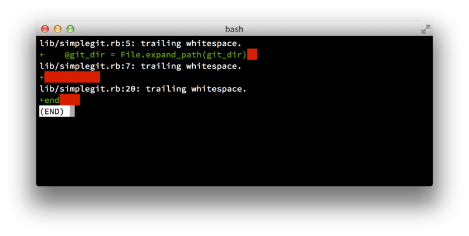

٥، ٣، المساهمة في مشروع
— إرشادات الإيداع
قبل أن نشرع في تناول حالات معينة، هذه ملاحظة قصيرة عن رسائل الإيداعات:
وجود إرشادات جيدة لصناعة الإيداعات والالتزام بها يسهّل كثيرا العمل مع جت والتعاون مع الآخرين.
يتيح مشروع جت مستندًا يسرد نصائح حسنة لصناعة الإيداعات وإرسال الرقع؛ يمكنك قراءته في مستودعه في ملف Documentation/SubmittingPatches.
أولا، يجب ألا يكون في تعديلاتك أخطاء في المسافات.
يسهّل جت تحقق هذا: نفّذ الأمر git diff --check قبل الإيداع، ليسرد لك الأخطاء المحتملة في المسافات.

git diff --checkباستعمال هذا الأمر قبل الإيداع، ستعلم إذا كنت على وشك إيداع مسافات خطأ قد تزعج المطورين الآخرين.
ثانيا، حاول جعل كل إيداع عبارة عن مجموعة مستقلة منطقيًّا من التعديلات.
وإذا استطعت فاجعل تعديلاتك سهلة الفهم: لا تعمل لياليَ نهاية أسبوع في خمس مسائل مختلفة ثم ترسلها جميعًا في إيداع عملاق واحد أول الأسبوع التالي.
حتى إن لم تودع خلال الليالي، فاستعمل منطقة التأهيل قبل الإيداع أول الأسبوع لكي تقسم عملك إلى إيداعٍ واحد لكل مسألة على الأقل، مع رسالة مفيدة لكل إيداع.
وإذا عدّلت في ملف واحد تعديلات مختلفة، فاستعمل أمر إضافة الرقعة git add --patch لتؤهل أجزاءً من الملف (نتناوله بالتفصيل في فصل التأهيل التفاعلي).
فإن لقطة المشروع عند رأس الفرع ستكون هي نفسها، سواءً جعلت التعديلات في إيداعٍ واحد أو في خمسة إيداعات، ما دمت قد أضفت جميع التعديلات. لذا حاول أن تسهّل الأمور على زملائك المطورين عندما يحتاجون إلى النظر في تعديلاتك.
كذلك يسهّل هذا عليك فيما بعد إن احتجت إلى اقتلاع أحد الإيداعات، أو نقضه (“revert”).
يشرح فصل تحرير التاريخ عددًا من حيل جت النافعة لتحرير التاريخ والتأهيل التفاعلي للملفات؛ استعمل هذه الأدوات لصياغة تاريخ نظيف ومفهوم قبل إرسال عملك إلى أحد.
وآخر شيء نذكّرك به: رسالة الإيداع. التعوّد على كتابة رسائل إيداع بيِّنة الجودة يجعل استعمال جت والتعاون به أيسر كثيرًا. والقاعدة الإرشادية العامة: ابدأ رسائلك بسطر واحد أدنى من خمسين مِحرَفًا ويشرح التغيير المودَع بإيجاز، وأتبعه بسطر فارغ ثم شرح مستفيض. يطلب مشروع جت أن يشمل ذلك الشرح المستفيض غرضَك من التغيير واختلافَه عن السلوك السابق له؛ هذا إرشاد حسن جدير بالاتّباع. واكتب رسائل الإيداع بالفعل المجرّد: “Fix bug” وليس “Fixed bug” أو “Fixes bug”. هذا قالب يمكنك اتباعه، وقد طوّعناه قليلًا من الذي كتبه Tim Pope:
Capitalized, short (50 chars or less) summary
More detailed explanatory text, if necessary. Wrap it to about 72
characters or so. In some contexts, the first line is treated as the
subject of an email and the rest of the text as the body. The blank
line separating the summary from the body is critical (unless you omit
the body entirely); tools like rebase will confuse you if you run the
two together.
Write your commit message in the imperative: "Fix bug" and not "Fixed bug"
or "Fixes bug." This convention matches up with commit messages generated
by commands like git merge and git revert.
Further paragraphs come after blank lines.
- Bullet points are okay, too
- Typically a hyphen or asterisk is used for the bullet, followed by a
single space, with blank lines in between, but conventions vary here
- Use a hanging indentإذا اتبعت جميع رسائل إيدعاتك هذا النموذج، فستكون الأمور أيسر كثيرًا عليك وعلى المطورين الذين يتعاونون معك.
ورسائل إيداع مشروع جت نفسه حسنة الصياغة؛ اسردها بالأمر git log --no-merges لترى كيف يبدو تاريخ إيداعات مشروع مصاغ صياغة حسنة.
|
افعل كما نقول، لا كما نفعل
في هذا الكتاب أمثلة كثيرة ليست ذات رسائل إيداع حسنة الصياغة كهذه. إنما نستعمل خيار الرسالة بإيجاز: افعل كما نقول، لا كما نفعل. |